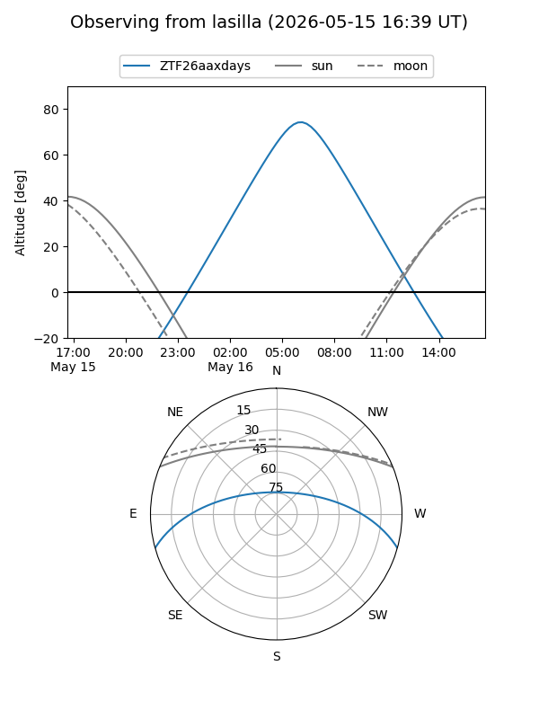
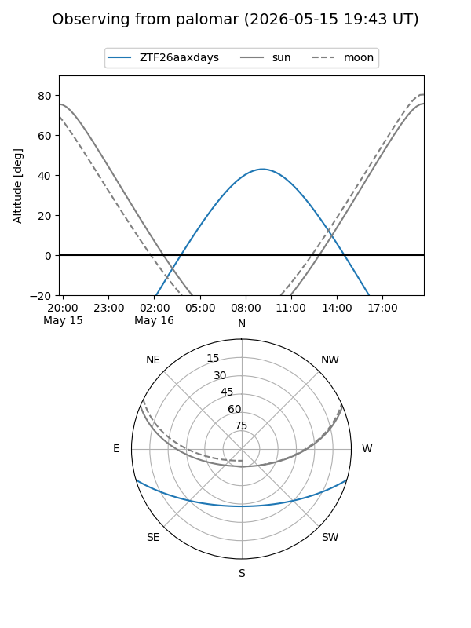

ZTF26aaxdays
Target ZTF26aaxdays at 2026-05-16 09:39
Aliases and brokers:
FINK: link
Lasair: link
ALeRCE: link
alt names
ZTF26aaxdays (ztf,fink_ztf)
Coordinates:
equatorial (ra, dec) = 253.7458,-13.54892
equatorial (HMS+DMS) = 16:54:59.00,-13:32:56.13
galactic (l, b) = (6.3932,+18.30898)
Flags:
Photometry:
last ztfg=17.34
1 ztfg detections
Lightcurve
Visibility


Additional plots